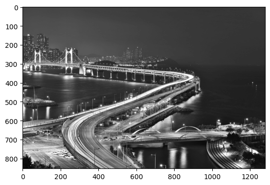
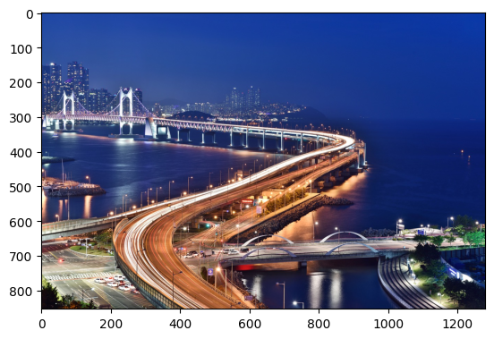
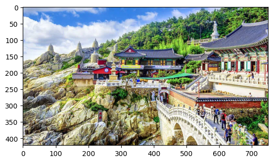
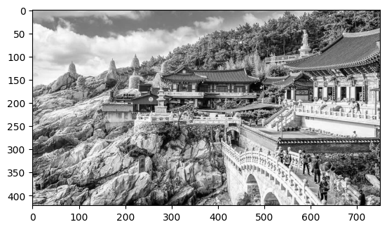

import numpy as np
import pandas as pd
import matplotlib.pyplot as plt
import random
import PIL.Image
import io
import requests1. – 10점
아래와 같은 기능을 하도록 클래스 Klass1을 설계하라.
#try
class Klass1:
def __init__(self):
print(f"클래스에서 인스턴스가 생성되었습니다.")
def __repr__(self):
text = "이름: 이민희\n학번: 202350654"
return text# 예시
ins = Klass1()클래스에서 인스턴스가 생성되었습니다.ins # 이름및 학번은 본인이름과 학번이 나오도록 할 것이름: 이민희
학번: 202350654#
2. – 15점
아래와 같은 기능을 하도록 클래스 Klass2을 설계하라.
#try
class Klass2:
def __init__(self):
self.results = []
self.n = 0
def toss(self):
result = np.random.choice(['앞면','뒷면'])
self.n = self.n + 1
self.results.append(result)
print(f"동전을 던져서 {result}이 나왔습니다. (현재까지 총 {self.n}번 던짐)")
def history(self):
return self.results# 예시1
ins = Klass2()ins.toss()동전을 던져서 뒷면이 나왔습니다. (현재까지 총 1번 던짐)ins.toss()동전을 던져서 앞면이 나왔습니다. (현재까지 총 2번 던짐)ins.history()[np.str_('뒷면'), np.str_('앞면')]#
# 예시2
ins = Klass2()for i in range(10):
ins.toss()동전을 던져서 뒷면이 나왔습니다. (현재까지 총 1번 던짐)
동전을 던져서 뒷면이 나왔습니다. (현재까지 총 2번 던짐)
동전을 던져서 앞면이 나왔습니다. (현재까지 총 3번 던짐)
동전을 던져서 뒷면이 나왔습니다. (현재까지 총 4번 던짐)
동전을 던져서 앞면이 나왔습니다. (현재까지 총 5번 던짐)
동전을 던져서 뒷면이 나왔습니다. (현재까지 총 6번 던짐)
동전을 던져서 앞면이 나왔습니다. (현재까지 총 7번 던짐)
동전을 던져서 앞면이 나왔습니다. (현재까지 총 8번 던짐)
동전을 던져서 뒷면이 나왔습니다. (현재까지 총 9번 던짐)
동전을 던져서 앞면이 나왔습니다. (현재까지 총 10번 던짐)ins.history()[np.str_('뒷면'),
np.str_('뒷면'),
np.str_('앞면'),
np.str_('뒷면'),
np.str_('앞면'),
np.str_('뒷면'),
np.str_('앞면'),
np.str_('앞면'),
np.str_('뒷면'),
np.str_('앞면')]#
3. – 15점
아래의 기능을 하도록 클래스 Klass3을 설계하라.
#try
class Klass3:
def __init__(self):
self.day = "수"
self.dct = dict(zip('월화수목금토일','화수목금토일월')) #'오늘:내일' 매핑 딕셔너리
print(f"오늘은 {self.day}요일 입니다.")
def next_day(self):
self.day = self.dct[self.day]
print(f"오늘은 {self.day}요일 입니다.")# 예시1
a = Klass3()오늘은 수요일 입니다.a.next_day()오늘은 목요일 입니다.a.next_day()오늘은 금요일 입니다.a.next_day()오늘은 토요일 입니다.a.next_day()오늘은 일요일 입니다.a.next_day()오늘은 월요일 입니다.#
# 예시2
b = Klass3()오늘은 수요일 입니다.for i in range(20):
b.next_day()오늘은 목요일 입니다.
오늘은 금요일 입니다.
오늘은 토요일 입니다.
오늘은 일요일 입니다.
오늘은 월요일 입니다.
오늘은 화요일 입니다.
오늘은 수요일 입니다.
오늘은 목요일 입니다.
오늘은 금요일 입니다.
오늘은 토요일 입니다.
오늘은 일요일 입니다.
오늘은 월요일 입니다.
오늘은 화요일 입니다.
오늘은 수요일 입니다.
오늘은 목요일 입니다.
오늘은 금요일 입니다.
오늘은 토요일 입니다.
오늘은 일요일 입니다.
오늘은 월요일 입니다.
오늘은 화요일 입니다.#
(풀이)
class Klass3:
def __init__(self):
self.day = "수"
self.dct = dict(zip('월화수목금토일','화수목금토일월'))
print(f"오늘은 {self.day}요일 입니다.")
def next_day(self):
self.day = self.dct[self.day]
print(f"오늘은 {self.day}요일 입니다.")4. – 15점
아래의 기능을 하도록 클래스 Klass4을 설계하라.
# 예시1
np.random.seed(43052)
x = np.random.rand(4305)k4 = Klass4(x)k4.check(0.65)배열중 0.65와 가장 가까운 값은 0.6499741766686671 입니다.k4.check(0.22)배열중 0.22와 가장 가까운 값은 0.2200479320948192 입니다.#
# 예시2
x = np.array([1,2,3,4])k4 = Klass4(x)k4.check(2.2)배열중 2.2와 가장 가까운 값은 2 입니다.#
(풀이)
class Klass4:
def __init__(self,x):
self.x = x
def check(self,v):
print(f"배열중 {v}와 가장 가까운 값은 {self.x[abs(self.x-v).argmin()]} 입니다.")5. – 20점
아래의 기능을 하도록 클래스 Busan클래스를 설계하라.
# 예시1
url = 'https://cdn.pixabay.com/photo/2016/10/17/07/53/busan-night-scene-1747130_1280.jpg'
img = np.array(PIL.Image.open(io.BytesIO(requests.get(url).content)))/255busan = Busan(img)busan.show_gray()
위의 흑백이미지는 \(Gray = 0.2989 \times R + 0.5870 \times G + 0.1140 \times B\) 를 이용하여 생성하라. 여기에서 R,G,B는 각각 이미지의 red,green,blue에 해당하는 array를 의미한다.
busan.show()
#
# 예시2
url = 'https://media.timeout.com/images/105996093/750/422/image.webp'
img = np.array(PIL.Image.open(io.BytesIO(requests.get(url).content)))/255busan = Busan(img)busan.show()
busan.show_gray()
위의 흑백이미지는 \(Gray = 0.2989 \times R + 0.5870 \times G + 0.1140 \times B\) 를 이용하여 생성하라. 여기에서 R,G,B는 각각 이미지의 red,green,blue에 해당하는 array를 의미한다.
#
(풀이)
class Busan:
def __init__(self,img):
self.img = img
def show(self):
plt.imshow(self.img)
def show_gray(self):
r,g,b = self.img[:,:,0],self.img[:,:,1],self.img[:,:,2]
gray = 0.2989*r + 0.5870*g + 0.1140*b
plt.imshow(gray,cmap="gray")6. – 25점
아래와 같은 기능을 하도록 Daho 클래스를 만들어라.
# 예시1
daho = Daho(end_condition=2)다호가 생성되었습니다. 다호의 목표는 2층의 높이의 탑을 쌓는 일입니다.daho현재높이: 0daho.build()다호가 1개의 블록을 사용하여 신중하게 탑을 쌓았습니다. --> 성공했습니다.daho현재높이: 1daho.build()다호가 1개의 블록을 사용하여 신중하게 탑을 쌓았습니다. --> 성공했습니다.daho현재높이: 2daho.build()다호는 이미 목표치(=2층 높이)만큼 탑을 쌓았습니다.daho현재높이: 2#
# 예시2
daho = Daho(end_condition=5)다호가 생성되었습니다. 다호의 목표는 5층의 높이의 탑을 쌓는 일입니다.for i in range(10):
daho.build()다호가 1개의 블록을 사용하여 신중하게 탑을 쌓았습니다. --> 성공했습니다.
다호가 1개의 블록을 사용하여 신중하게 탑을 쌓았습니다. --> 성공했습니다.
다호가 1개의 블록을 사용하여 신중하게 탑을 쌓았습니다. --> 성공했습니다.
다호가 1개의 블록을 사용하여 신중하게 탑을 쌓았습니다. --> 성공했습니다.
다호가 1개의 블록을 사용하여 신중하게 탑을 쌓았습니다. --> 성공했습니다.
다호는 이미 목표치(=5층 높이)만큼 탑을 쌓았습니다.
다호는 이미 목표치(=5층 높이)만큼 탑을 쌓았습니다.
다호는 이미 목표치(=5층 높이)만큼 탑을 쌓았습니다.
다호는 이미 목표치(=5층 높이)만큼 탑을 쌓았습니다.
다호는 이미 목표치(=5층 높이)만큼 탑을 쌓았습니다.daho현재높이: 5#
(풀이)
class Daho:
def __init__(self,end_condition):
self.end_condition = end_condition
self.height = 0
print(f"다호가 생성되었습니다. 다호의 목표는 {self.end_condition}층의 높이의 탑을 쌓는 일입니다.")
def build(self):
if self.height < self.end_condition:
self.height = self.height + 1
print(f"다호가 1개의 블록을 사용하여 신중하게 탑을 쌓았습니다. --> 성공했습니다.")
else:
print(f"다호는 이미 목표치(={self.end_condition}층 높이)만큼 탑을 쌓았습니다.")
def __repr__(self):
text = f"현재높이: {self.height}"
return text